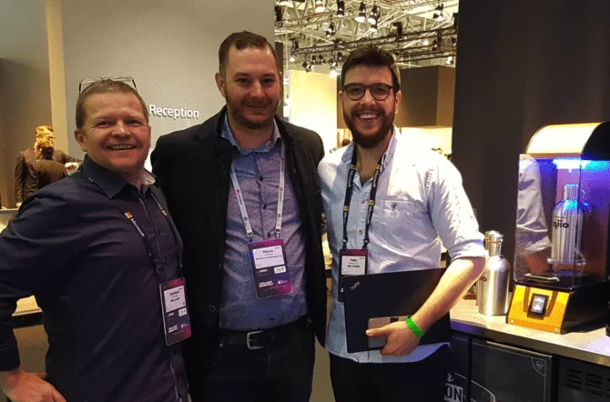

March 12, 2019
qiio highlights of Mobile World Congress and embedded world
Mobile World Congress 2019 and embedded world finished at the end of
February. qiio participated in both exhibitions as an exhibitor. We showcased our IoT solution for the beer
industry.
Mobile World Congress 2019
Mobile World Congress 2019 was a huge success for qiio. More than 1000 visitors, from 717 companies and 61
countries, have visited qiio’s booth. In the video, you can see how we implement IoT in beer. This solution
is secure and end-to-end. Check this blog post to learn more about the value of end-to-end solutions.
During the 4-day exhibition, we have served around 190 liters of non-alcoholic and alcoholic beer. We were
thrilled to see many visitors being interested in the Beer Station.

In addition, many TV stations were interested in qiio. We had visits from Reuters, TV3, n-TV, Pro7, Sat1, etc. During the exhibition period, we showed up in the largest regional TV channel from Catalonia during the prime time.
embedded world In embedded world, we had the chance to present our solution every day at the Microsoft IoT Theater. Thanks to everyone who participated in our presentation and visited us!

Next stop: Bosch ConnectedWorld 2019 From 15th to 16th May, we will participate in Bosch ConnectedWorld 2019 in Berlin. We look forward to seeing you there!